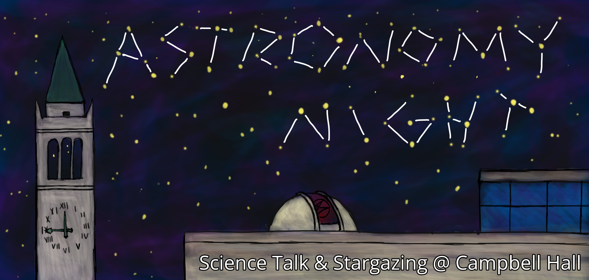

Science Festivals
So far, we participate in:
- Discovery Day at Oracle Park
- Lawrence Hall of Science Palooza
- Kits Cubed STEM Fair
Astro Night
 I help coordinate a monthly public observing night at Berkeley where we have an hour of lecture and an hour of stargazing on the roof of Campbell Hall. We use Treffers and other smaller telescopes to observe targets such as the Moon, Saturn's rings, and nebulae. You can see past recorded lectures on our YouTube Channel.
Public Talks
I love to share my research and the joy of discovering black holes with the public. I regularly teach at Splash and Nueva School Intersession, which are programs for local high school students to dive into topics they might not learn in school. I am also a Wonderfest Science Envoy, a program for the development of science communication skills. Here's a selection of recordings of talks I've given: